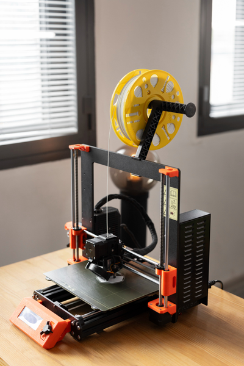
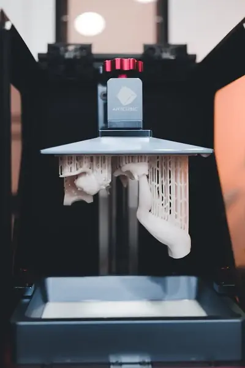

Printer Styles
Click each picture to learn more
FDM Printer

Fused Deposition Modeling (FDM) is the most common type of 3D printing.
It works by heating plastic filament and pushing it through a nozzle.
Just like CNC machines, 3D printers use G-Code to move in a predetermined
path, depositing the plastic layer by layer to form a solid object
FDM printing is fairly easy to learn, and the
materials are cheaper than other printing options. This makes it a great
choice for prototyping. The materials are also relatively strong compared
to other methods of 3D printing. However, there are downsides to using FDM
printers. For instance, they are a lot slower than other methods, and their
surface finishes don't look quite as nice.
SLA Printer

Fused Deposition Modeling (FDM) is the most common type of 3D printing.
It works by heating plastic filament and pushing it through a nozzle.
Just like CNC machines, 3D printers use G-Code to move in a predetermined
path, depositing the plastic layer by layer to form a solid object
FDM printing is fairly easy to learn, and the
materials are cheaper than other printing options. This makes it a great
choice for prototyping. The materials are also relatively strong compared
to other methods of 3D printing. However, there are downsides to using FDM
printers. For instance, they are a lot slower than other methods, and their
surface finishes don't look quite as nice.